Oracle Cloud Infrastructure(OCI) 上でのCreate Oracle Container Engine for Kubernetes (OKE) の構築¶
Oracle Cloud Infrastructure Container Engine for Kubernetesは、クラウド上にコンテナ化されたアプリケーションをデプロイできるフルマネージド、スケーラブル、高可用性なサービスです。開発チームがクラウドネイティブアプリケーションを確実に構築、デプロイ、管理したい場合は、Oracle Container Engine for Kubernetes (OKEと略します)を使用します。ユーザがアプリケーションに必要なコンピュートリソースを指定すると、Oracle Container Engine for Kubernetesが既存のOCIのテナント上に必要なリソースをプロビジョニングします。
はじめに¶
このチュートリアルでは、有効なOracle Cloud Infrastructureのアカウントが必要です。
Oracle Container Engine for Kubernetes (OKE) を構築するために以下の手順を完了させる必要があります。
- ネットワークの作成(VCN、サブネット、セキュリティリストなど)
- クラスタの作成
- ノードプールの作成
このチュートリアルでは、必要なリソースを自動的に作成するクイック作成機能を利用して非常に簡単に3つのKubernetesノードを作成する手順をご紹介します。 高可用性を保証するために、全てのノードはそれぞれ異なる可用性ドメイン(Availability Domains)上にプロビジョニングされます。
OKEに関する詳細および手動でのクラスタ構築については、以下をご確認ください。
OCIコンソールの表示¶
Oracle Cloud Infrastructureの登録手順の中で受信したメール内のクラウドサービスアクセスするリンクを利用してサインインを行います。(初回ログインの場合は初期パスワードの変更を行う必要があります)
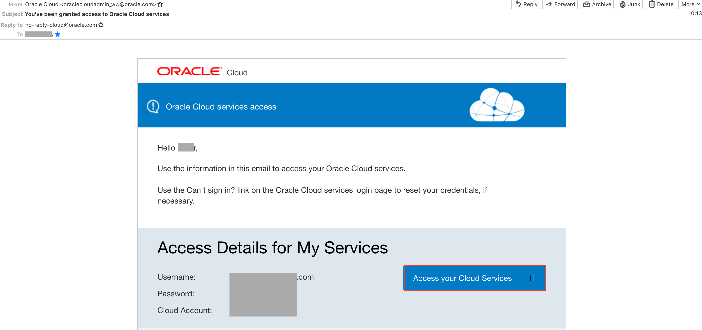
メールに記載しているユーザ名と登録時に設定したパスワードを入力してサイン・インをクリックしてください。
表示された画面上部のインフラストラクチャをクリックします。
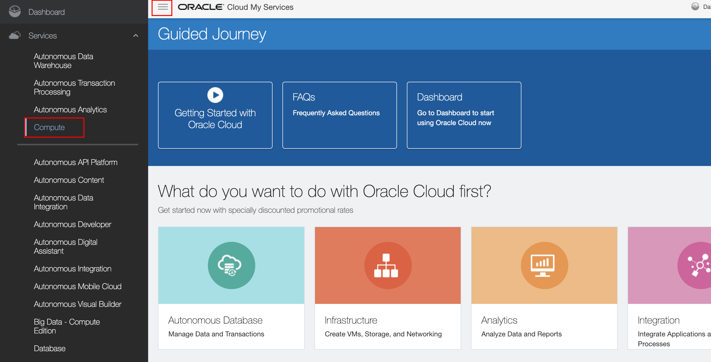
OCIコンソール画面が表示されます。
ポリシーの作成¶
サービスポリシーは、コンピュートをはじめとしたテナント内のリソース作成を許可する役割があります。また、OKEのリソースポリシーは、ユーザのテナント内のグループがOKEのAPIを利用して何を実行できるかを制御できます。
さらに、あるグループがOKEにおける無関係なリソースにアクセスするのを規制したい場合についてもポリシーの追加によって実現することができます。
ナビゲーションメニューを開き、アイデンティティのポリシーをクリックします。
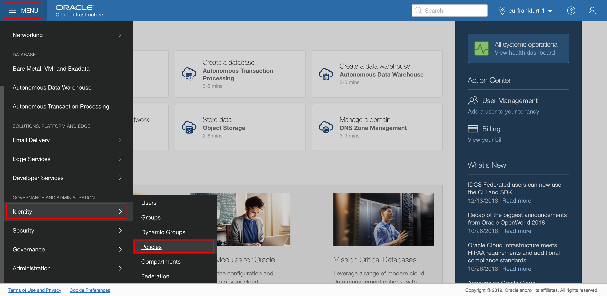
左側にある"ルート"コンパートメントを選択すると、表示されているコンパートメントのポリシー一覧が確認できます。もし、"ルート"コンパートメント以外のコンパートメントに対してポリシーを追加したい場合は、リストの中から適切なコンパートメントを選択します。ポリシーの作成をクリックします。
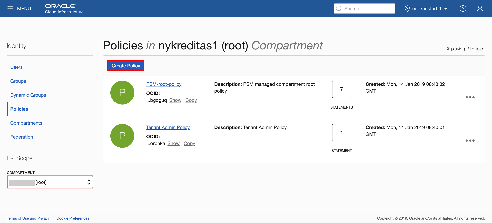
以下のように入力します。
- 名前:ポリシー名。テナント内の全てのポリシーでユニークでなければなりません。後からの変更はできません。
- 説明:ポリシーの分かりやすい説明。
- ポリシーのバージョニング:ポリシーを最新の状態に保持を選択。これは、将来的なサービスの動詞やリソースの定義に関する変更に合わせてポリシーが最新の状態に保たれることを保証します。
- ポリシー・ステートメント:ポリシーのステートメント。
allow service OKE to manage all-resources in tenancyと入力してください。 - タグ::何も入力しないでください。
作成をクリックします。
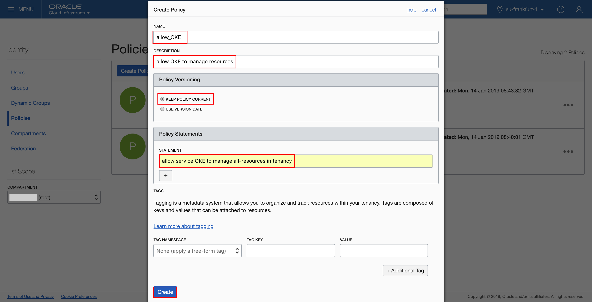
OKE (Oracle Container Engine for Kubernetes)クラスタの作成¶
クイック作成機能は、必須となるネットワークとクラスタの作成をデフォルトの設定で構築を行います。このアプローチは新規でクラスタを作成するための最速の方法です。全ての設定がデフォルトで問題なければ、数回のクリックだけで新規でクラスタを作成できます。クラスタが利用するネットワーク、ノードプールおよび3つのワーカーノードが自動的に作成されます。
コンソールで、ナビゲーションメニューを開きます。開発者サービス=>コンテナ・クラスタ(OKE)をクリックします。
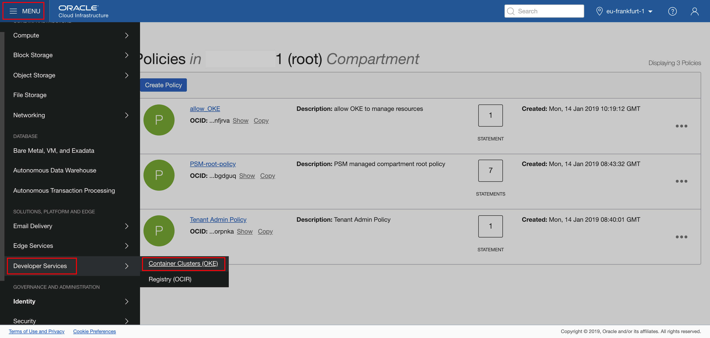
クラスタ一覧のページで、クラスタの作成をクリックします。
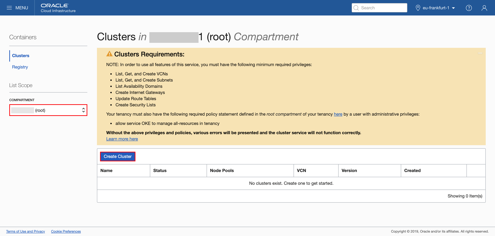
以下の設定を行います。
- 名前:クラスタの名前を入力します。例えば、デフォルトではcluster1という名前になります。
- KUBERNETESバージョン:マスターノードおよびワーカーノードのKubernetesのバージョンを指定します。最新バージョンを選択してください。
- デフォルトの設定で、ネットワークおよび新規のクラスタを作成するためにクイック作成を選択してください。
クラスタの作成画面内の仮想クラウド・ネットワークの作成では、VCNと呼ばれるネットワーク、ロードバランサーサブネット、3つのワーカーノードが利用するサブネットがデフォルトで作成されることが確認できます。
クラスタの作成画面内のノード・プールの作成では、作成される最初のノードプールの固定プロパティを確認できます。- ノードプールの名前(pool1で固定)
- 作成されるノードプールの名前。(新規で作成されるネットワークと同じコンパートメントで固定)
- ノードプール内のそれぞれのワーカーノードにおけるKubernetesバージョン(Kubernetesバージョンで選択したバージョンで固定)
- ノードプール内のそれぞれのワーカーノードのイメージ
ノード・プールの作成では、ユーザが変更可能な設定もいくつか含まれます。 - シェイプ: ノードプール内のそれぞれのワーカーノードのシェイプ。シェイプは、それぞれのノードに割り当てられるメモリサイズとCPU数で決定される。リスト内には、ユーザのテナントで利用可能、かつOracle Container Engine for Kubernetesがサポートするシェイプのみが表示されます。VM.Standard2.1を選択してください。 - ノードの数: ノードプール内のそれぞれのサブネットに作成するワーカーノードの数。 2を入力してください。 - SSH公開キー: 空欄のままにしてください。 - KUBERNETESダッシュボード有効: チェックをつけたままにしてください。 - Tiller(Helm)有効: チェックをつけたままにしてください。
作成をクリックしてください。
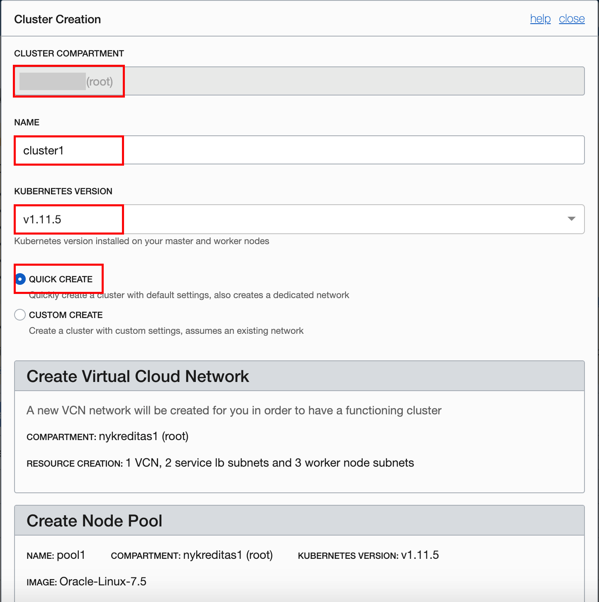 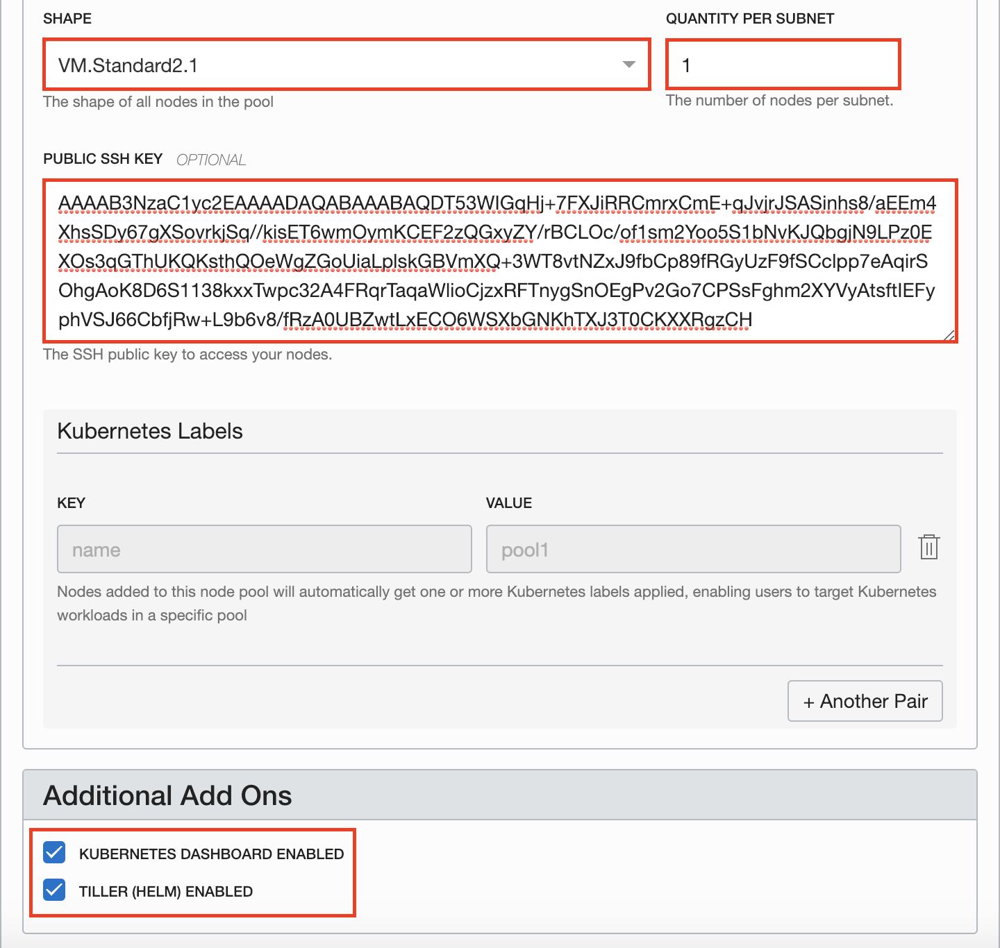 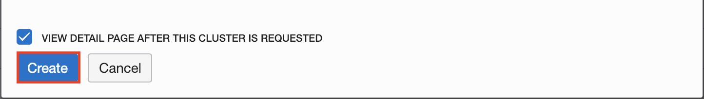
閉じるをクリックし、コンソールに戻ってください。
Kubernetes設定ファイルをダウンロードするためのOCI CLIの準備¶
クラスタの作成ができたら、Kubernetes設定ファイル(通常はkubeconfigとなります)をダウンロードします。Kubernetes設定ファイルをダウンロードするためには、OCI API署名キーを追加し、ワークステーション(Virtualbox環境)でOCI CLIを構成する必要があります。
OCI CLIの設定¶
CLIを利用する前に、Oracle Cloud Infrastructureを利用するための認証情報を含んだ設定ファイルを作成する必要があります。設定ファイルの作成には、oci setup configコマンドを使用します。このコマンドは、設定ファイルとAPI公開鍵/秘密鍵のために必要な情報を要求します。これにより、セットアップダイアログは、APIキーと設定ファイルを作成します。
CLIのセットアップの前にOCIコンソールから必要となる情報を用意します。
- User OCID
- Tenancy OCID
- Region
OCIコンソールの右上の人型マークをクリックし、ユーザ名をクリックします。ユーザ情報ページにあるuser OCIDを確認し、コピーをクリックします。クリップボードにコピーされた情報をテキストエディタなどに保持しておきます。

同じように、OCIコンソールの右上の人型マークをクリックし、テナンシ名をクリックします。テナンシ情報ページにあるtenancy OCIDを確認し、コピーをクリックします。クリップボードにコピーされた情報をテキストエディタなどに保持しておきます。

CLIセットアップ中についてもコンソールを開いたままにしてください。上記で用意したUser OCIDとTenancy OCIDは、テキストエディタからコピーして使用します。
CLIセットアップ時にデフォルト値(角括弧内の値)でも問題ない場合は、そのままEnterを押してください。
Note: OCI CLIについての詳細はdocumentationをご確認ください。
CLIをセットアップするためにoci setup configコマンドを実行してください。
$ oci setup config This command provides a walkthrough of creating a valid CLI config file. The following links explain where to find the information required by this script: User OCID and Tenancy OCID: https://docs.us-phoenix-1.oraclecloud.com/Content/API/Concepts/apisigningkey.htm#Other Region: https://docs.us-phoenix-1.oraclecloud.com/Content/General/Concepts/regions.htm General config documentation: https://docs.us-phoenix-1.oraclecloud.com/Content/API/Concepts/sdkconfig.htm Enter a location for your config [/home/oracle/.oci/config]:
設定ファイルの場所についてはデフォルト値を利用するので、そのままEnterを押してください。User OCIDとTenancy OCIDを入力してください。
Enter a user OCID: <YOUR_USER_OCID> Enter a tenancy OCID: <YOUR_TENANCY_OCID>
利用しているリージョンを入力してください。リージョンは、OCIコンソールの右上で確認できます。何も入力しない場合は、eu-frankfurt-1になります。
Enter a region (e.g. eu-frankfurt-1, uk-london-1, us-ashburn-1, us-phoenix-1): <YOUR_REGION>
API署名キーを作成します。デフォルト値を利用するので、そのままEnterを押してください。秘密鍵のpassphraseは入力しないでください。
Do you want to generate a new RSA key pair? (If you decline you will be asked to supply the path to an existing key.) [Y/N]: Y Enter a directory for your keys to be created [/home/oracle/.oci]: Enter a name for your key [oci_api_key]: Public key written to: /home/oracle/.oci/oci_api_key_public.pem Enter a passphrase for your private key (empty for no passphrase): Private key written to: /home/oracle/.oci/oci_api_key.pem Fingerprint: 41:ea:cf:23:01:a2:bb:fb:84:79:34:8e:fe:bc:18:4f Config written to /home/oracle/.oci/config
API署名キーペアの公開鍵のアップロード¶
OCI CLIセットアップの最後の手順は、先ほど作成した公開鍵のアップロードになります。公開鍵は、(デフォルトから変更していなければ)OCI CLIセットアップ時に/home/oracle/.oci/ディレクトリのoci_api_key_public.pemという名前で作成されています。好みの方法で、公開鍵の内容をクリックボードにコピーしてください。
OCIコンソールの右上の人型マークをクリックし、ユーザ情報をクリックします。公開キーの追加をクリックします。

先ほどコピーしたoci_api_key_public.pemの内容を公開キーテキストエリアに張り付け、追加をクリックします。

公開鍵がアップロードされ、そのフィンガープリントがリスト上に表示されます。
kubectlの設定¶
Note: kubectlをインストールする必要がある場合は、documentationを参照してください。
CLIセットアップは以上で完了です。続いてkubectlの設定を行うために開発者サービス=>コンテナ・クラスタ(OKE)をクリックします。
作成したクラスタを選択し、クラスタの詳細ページに遷移します。
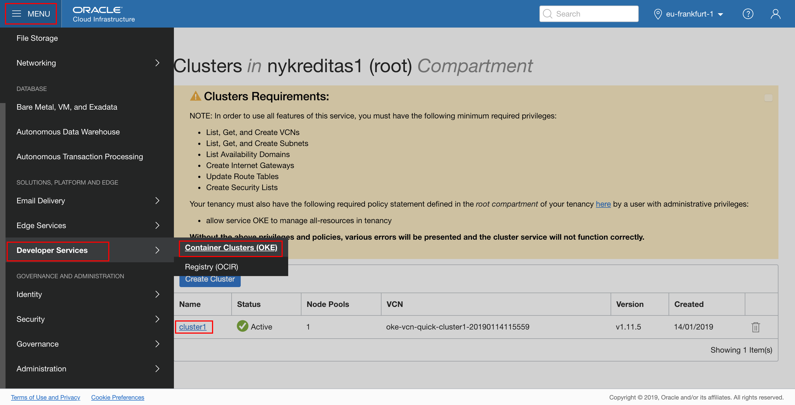
Access Kubenetes Dashboardをクリックし、kubeconfigへのアクセスをクリックします。
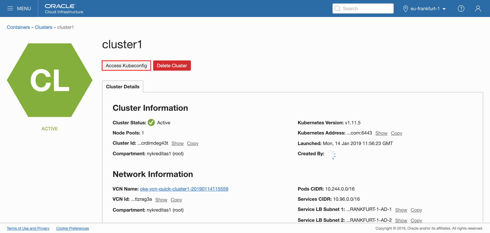
Kubernetes設定ファイルを作成するためのCLIコマンドを含んだダイアログポップアップが表示されます。
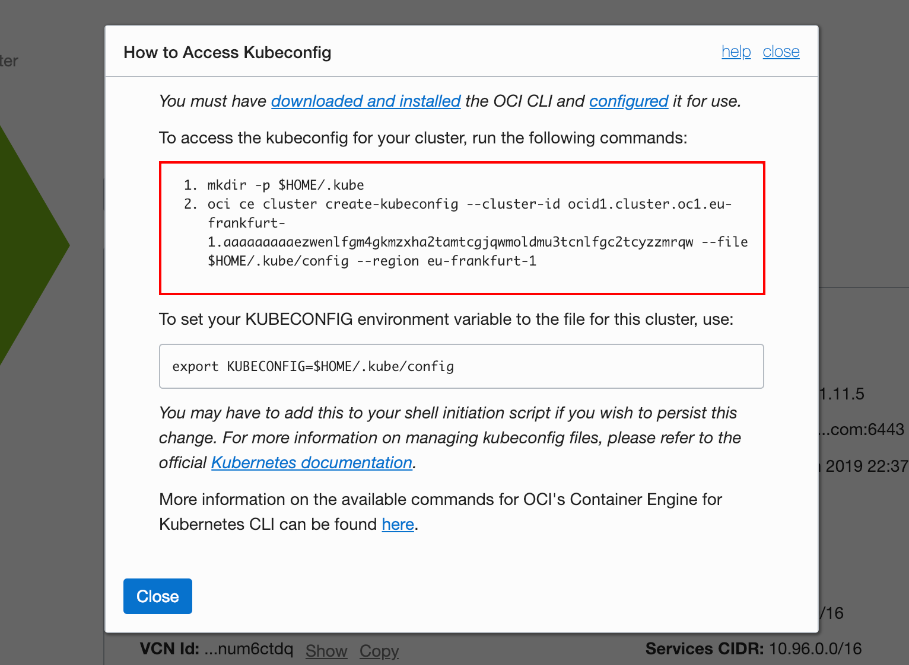
Kubernetes設定ファイルを作成するためのCLIコマンドをコピーし、実行します。以下に例を示します。
$ mkdir -p $HOME/.kube $ oci ce cluster create-kubeconfig --cluster-id ocid1.cluster.oc1.eu-frankfurt-1.aaaaaaaaaezwenlfgm4gkmzxha2tamtcgjqwmoldmu3tcnlfgc2tcyzzmrqw --file $HOME/.kube/config --region eu-frankfurt-1
Note! kubectlはデフォルトで$HOME/.kube/configで設定ファイルを読み込もうとします。異なるディレクトリでKubernetes設定ファイルを設定したい場合は、環境変数KUBECOINFIGを設定することを忘れないでください。以下に例を示します。
export KUBECONFIG=another_folder_path/kubernetes_config_file_name
kubectlが動作することを確認しましょう。例として、今回はget nodeコマンドを使用します。
$ kubectl get node NAME STATUS ROLES AGE VERSION 130.61.58.206 Ready node 16m v1.11.5 130.61.60.127 Ready node 16m v1.11.5 130.61.72.48 Ready node 16m v1.11.5
nodeの情報が確認できたら、成功です。NAMEカラムにはルーティング不可のIPアドレスが含まれます。
OKEクラスタへのRBACポリシーの作成¶
Kubernetes clusterへのアクセスを許可するためにOracle Container Engine for Kubernetes上のクラスタ管理者としてのOCIアカウントを認可する必要があります。 これには、OCI CLIセットアップ時に使用したuser OCIDが必要になります。(OCIコンソールの右上にある人型マークをクリックし、ユーザ名をクリックすると表示されるユーザ情報で確認できます)
user OCIDを利用してrole bindingコマンドを実行します。
kubectl create clusterrolebinding my-cluster-admin-binding --clusterrole=cluster-admin --user=<YOUR_USER_OCID>
以下に例を示します。:
$ kubectl create clusterrolebinding my-cluster-admin-binding --clusterrole=cluster-admin --user=ocid1.user.oc1..aaaaaaaa724gophmrcxxrzg3utunh3rg5ieeyyrwuqfetixdb3mhzesxmdbq clusterrolebinding "my-cluster-admin-binding" created
おめでとうございます。これで、WebLogicドメインをデプロイするためのOKE環境の準備が整いました。